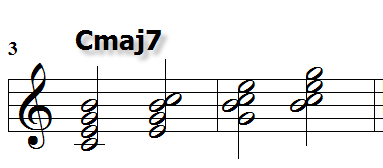
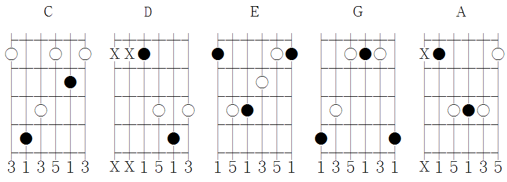
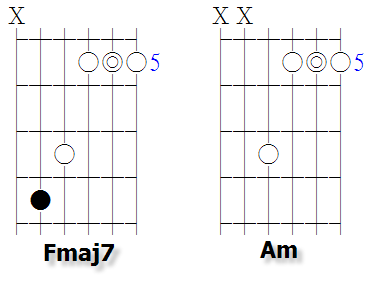
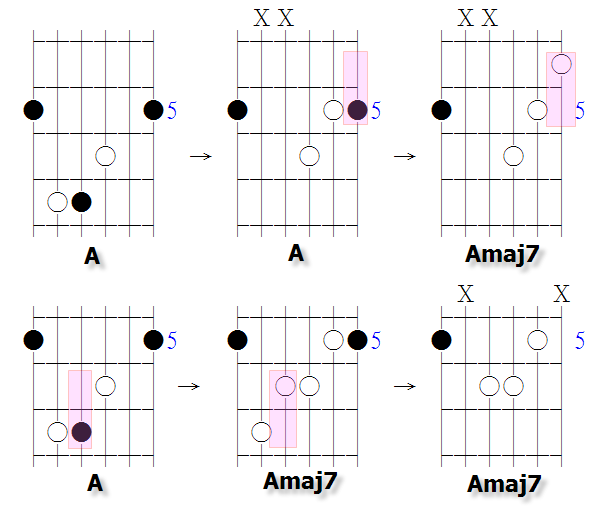

吉他的和弦聲位基本概念 (Chord Voicing)
基本概念
和弦聲位 (Chord Voicing) 是一種和弦配置的應用技巧，主要的概念就是 密集聲位 (Closed Voicing) 和 遠距聲位 (Open Voicing) 的思考.
轉位 (Inversion)
我們先把和弦的基本概念定義出來，在鍵盤上和弦排列的方式，也就是所謂的 轉位和弦 (Chord Inversion) 的概念，簡單說，C 和弦在鍵盤上基本的會有三種排列組合 (如圖):

- 基本：C E G
- 第一轉位：E G C
- 第二轉位：G C E
同理，七和弦會有四種基本的轉位。例如 Cmaj7 來看:

- 基本：C E G B
- 第一轉位：E G B C
- 第二轉位：G B C E
- 第三轉位：B C E G
密集聲位 (Closed Voicing)
上述這些轉位和弦都是在一個八度以內，而且每個組成音都是比鄰且依次序排列，所以它們都是 密集聲位 (Closed Voicing，有些書翻譯密集配置、或稱 Close Harmony 密集和聲)。
同樣的概念，如果跨越了八度音，就會有更多的排列組合，同時會不同於密集聲位，組成音之間不見得會比鄰，或者依序排列，例如:

Cmaj7：C5 E5 G5 B5 (1 3 5 7)
| 左手 | 右手 |
|---|---|
| C3 G3 | E4 B4 C5 |
| C3 G3 | E4 B4 E5 |
| C4 E4 B4 | E5 G5 E6 |
| C4 B4 | B5 E5 E6 |

C9：C5 E5 G5 Bb5 D6 (1 3 5 b7 9)，組成音更多，變化的組合更多了.
| 左手 | 右手 |
|---|---|
| C4 G4 | E5 Bb5 D6 |
| C4 G4 | D5 E5 Bb5 |
| C4 E4 Bb4 | G5 Bb5 D6 |
| C4 Bb4 | E5 Bb5 D6 |
Cadd9：C5 E5 G5 D6 (1 3 5 9)
| 左手 | 右手 |
|---|---|
| C3 G3 | E4 D5 |
| C3 E3 | D4 G4 |
鍵盤上的級數
上述音名右邊的數字不是表示 音程 (Interval)，而是表示鍵盤上第幾個八度，中央 C 為第四個八度，寫成 C4。由左到右的所有的 C 分別用 C1、C2、C3、C5 ..。etc 表示，如下圖 ：

延伸和弦 (Extended Chord) 或者裝飾和弦 (Xsus4、Xadd9) 等，上述的按法會有非常多的排列組合，應用也非常的多樣化.
遠距聲位 (Open Voicing)
這樣 跨越八度音距離的和弦 叫做 遠距聲位 (Open Voicing，或寫成 Spread Voicing，Open Harmony。有些書翻譯成離開配置、離開和聲、延伸配置 ...)。
這是一些概念上的定義，實際上可以應用的東西很多，不過必須要有這樣的理解。鍵盤是橫向樂器，所以往左往右，代表不是高就是低，也就是是一維，而吉他是二維座標的樂器，除了往左往右，還可以往上往下，所以鍵盤上的左右音高特性 (往左往右)，在吉他上都有，但是吉他有六條弦 (往上往下)，所以有的時候可以想像成六架鋼琴並排。但是吉他的限制就是：每一根弦一次只能發出一個聲音，六根弦只能同時發出六個聲音。
差異
轉位和弦 (Chord Inversion) 和 和弦聲位 (Chord Voicing) 的差異在於：
- 轉位和弦的和弦組成是
依序排列，而且是在八度音之內 - 和弦聲位上述兩個條件都不是必要的
換言之，Chord Voicing 使用上的彈性 / 變化 / 張力很大，同樣一個 Cmaj9，可能可以彈出很多種不一樣的感覺。
吉他指板的和弦聲位概念
吉他因為本身的構造關係，所以上述的密集聲位和轉位和弦實際上在吉他上是比較少的，也就是想要直接按出一個指型，右手由第六弦往第一弦一根一根撥，然後形成比鄰的和弦內音，基本上是不太容易的，除非直接彈 琶音 Arpeggios。所以吉他的和弦，實際上概念比較類似遠距聲位.
吉他是一種二維樂器，就是可以想像成有 X、Y 軸 (或者想像成圍棋吧 )，容易構成簡單的幾何圖形。所以在學習的過程當中，圖像式的思考與記憶，是一個最適當的方式。所以和弦的基本應用我們就從最基本的 指型，也就是一個 面 的思維切入.
第一種：基本指型的變化 (面)
吉他指板有五個基本和弦指型，它們通常就是：CGDAE (如下圖)。其中 C、A、E 我把他們叫做基本指型，因為 D、G 指型都可以分別用 C、A 透過指型簡化 + 空弦應用的方式推出來，這在後面會提到.

五個指型都可以當成所謂的移動式和弦，像是 E 和弦變成 F.
三和弦簡化指型
上述五種指型都可以用簡化指型的概念來做出基本的變化，最基本的觀念就是省略某幾根弦不按所形成的新的簡易指型。五六弦是最常見的被省略方式，像是剛開始學 F 時，實際上是從 F 的 E 指型簡化來的，如下圖:

除了 F，另一個常見的例子就是 D 和弦的由來:

C 指型平移兩格之後，得到 D 和弦，再省略 4、5 弦不按，剛好第四弦空弦是 D，所以剛好形成 D 和弦的按法。另外，前述提到 A 和弦也可以是某一個基本和弦簡化 + 空弦應用而來，就留給讀者自己去想像.
七和弦的簡化指型
七和弦的簡化指型概念跟三和弦一樣。一樣先從五個基本三和弦指型找到七和弦，以屬七和弦 (Dominant Seventh，X7) 做例子:

這部份如果以七和弦做基本的話，變化會很大，也可以加入很多創意。讀者可以自己踹踹看 (try) 其他的七和弦 (Xmaj7、X7、Xm7、Xdim7、Xm7-5 … etc)，有興趣 google 一下，可以找到很多資訊.
舉一些變化的想法，例如：Emaj7sus2 簡化 (省略五六弦) 後會變成 B。E 和 B 剛好是 I - Ⅴ 的關係，以這兩個的變化出發，就可以玩出很多東西了.

Emaj7sus2 的例子來自於歌曲分析：Jack Thammarat - Falling in Love Again
另一個例子，Fmaj7 簡化五六弦會得到 Am .

另外一種簡化想法，七和弦省略一二弦會得到：Shell Chord.
或者改變簡化的方式，例如 E 型的 A 和弦，保留第六弦 (用拇指按)，省略四五弦，像 A 和弦:

這樣就會找到很多盧廣仲、方大同常用的那種按法。他那些按法就是以七和弦做基礎，所以以七和弦為基礎的移動和弦，套用這個簡化概念，那麼盧廣仲的和弦按法就不難懂了。 上圖中 A、Amaj7 的例子，打 X 的弦，真的不能彈嗎? 吉他手隨時要記得，空弦也是一個可以利用的時機.
上述關於七和弦的例子，如果有興趣玩 Jazz / Fusion / Funk / Blues 的朋友，上述的東西一定要花時間研究這種用法，因為這種東西在上述風格中，算是很基本的應用概念.
裝飾和弦的應用
Xsus4、Xsus2、Xadd9、X7sus4 … etc，我都把他們叫做裝飾和弦。但是不管是 C、A、E 指型，還是 D、G 指型，我們都可以利用它們來創造出一些不一樣的和弦。最基本的應用就是 Xsus4、Xsus2、Xadd9 等基本的裝飾和弦變化。特別的是，有一些和弦的裝飾音 (四度音、九度音) 放在空弦，那麼彈出來的和弦會非常有 New Age 感.
第二種：用和弦組成音找指型 (點 -> 線 -> 面)
如果你已經熟悉其他樂器 (Ex：piano、violin、bass …)，也已經知道基本的和弦概念，那麼或許可以不用理會第一種的思維，完全以和弦組成音去找吉他的和弦指法.
以古典吉他的學習思考來看，因為看的是五線譜，思考邏輯是:
- 看懂豆芽菜 (音名)
- 找到指板上對應的音名位置 (注意同音異弦)
- 找到旋律的分布 (通常會在一，二弦)
- 分析旋律以外的音可能是哪一個和弦
- 找和弦指型，搭配旋律找到適合的把位位置
這段思維就是由 點 (單一音名) -> 線 (Melody 旋律) -> 面 (Chord 和弦) 的思考過程。不同於第一種思維，剛好完全相反。這時候可以把 Closed Voicing 或 Open Voicing 的概念套進來，然後適度調整八度音的位置，就很容易找到很特別的和弦按法。
例如這樣組成音的一個和弦：D4 C5 D5 F5 ==> Dm7 (D F A C) 省略五度音.
上述的 Dm7 實際上在吉他上不是很容易按，不過這種跨多格的和弦，在一些吉他大師的歌曲當中，出現的頻率是很高的.
這種方法就完全不依賴上述的五種指型，不管是 C、A、E 指型，還是 D、G 指型，它們都是一個視覺上的記憶方式，撇開這些 “形狀” 的思維，無聊的話，你可以試著去吉他上找出所有的 C E G B (Cmaj7) 這些音符，然後依照比重分配指型的分布，按出不一樣的指型.
上述部分，已經接近琶音 (Arpeggios) 的思維，更多介紹請看 吉他琶音練習 - 以 Gmaj7 為例 的介紹
和弦指型抽象化應用 (面 -> 線)
指型抽象化的主要想法是這樣的：和上述提到的簡化和弦指型想法相反，從已知的吉他和弦指型 (CGDAE)，做應用變化。例如 E 型和弦，但是只彈其中兩根弦，只彈兩根弦會型成類似三度音、四度音、六度音、或者只彈 Guide Tone 等。
可以用基本的常用和弦指型為基礎，然後簡化不必要得五度音 … 配合空弦，找尋附近的七度音、九度音、十一度 … etc … 大概就可以弄出很多非一般的和弦 ~~
這概念弄到最後，直接看到按法可能會無法聯想出原本的和弦指型是啥，這就是抽象化的目的。 因為抽象化之後的和弦已經從和聲功能 (面) 接近到旋律 (線) 的功能了。 利用這種思考邏輯，即使只有一個和弦，也可以彈出有旋律性的東西.
Jimi Hendrix 的名曲 Little Wing 在彈奏時，基本的思維就可以這樣延伸.
結論
大概粗略的分析吉他的和弦應用想法，基本上這種思考邏輯就是以五個吉他和弦指型為中心，也就是一種圖形的 "面" (和聲) 思考，一直到最後的應用，會接近 "線" (旋律) 的概念.
對於學吉他已經一段時間的朋友，但是每次看到一些比較特別的和弦按法，往往都會退卻，或者不知道為什麼那樣按。其實只要發會想像力，就可以有很多不同的按法; 或者去學一點鍵盤或者古典吉他，簡單說就是要去用 “點 -> 線 -> 面” 的方式來思考和弦.
在 “吉他的基本功” 一文裡提到一個和弦的基本概念，就是一個和弦 “至少” 要能夠有五種以上的按法，有了這樣的基本功，在歌曲的伴奏上，才能讓歌曲更有層次，更有變化.
上述中我一直用數學幾何的面線 (不是麵線阿) 來分別代表音樂的和聲、旋律。把幾何學上最基本的 “點” 再加進來，對應到音樂的基本元素剛好就是最重要的節奏.
延伸閱讀
站內資料
- 吉他琶音練習 - 以 Gmaj7 為例
- 吉他琶音練習 - 251 of G Major
- 和弦學習地圖
- 和弦基礎
- 掛留和弦 (Suspended Chord)
- Shell Chord
- Drop Voicing
- 吉他空弦聲響
更新紀錄
- 原文位址：https://rickmidi.blogspot.com/2010/04/chord-voicing.html
- 2010/04/17: 初版
- 2021/09/12: 搬移新站